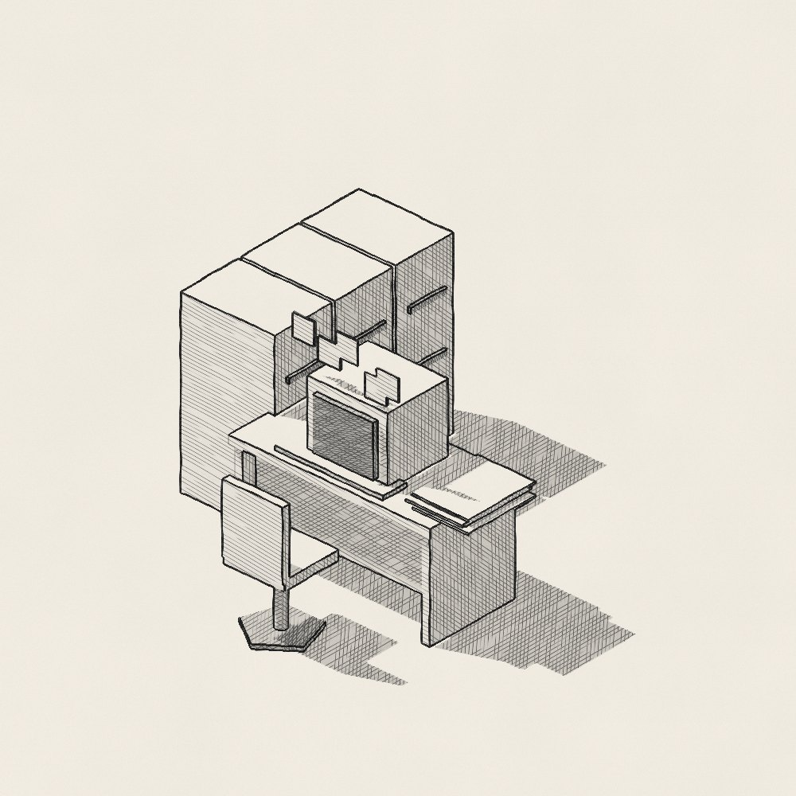
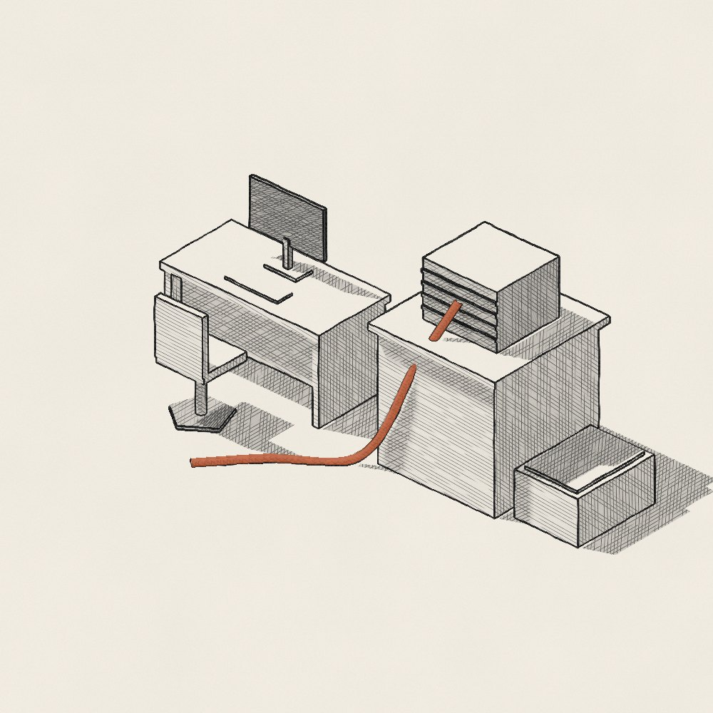
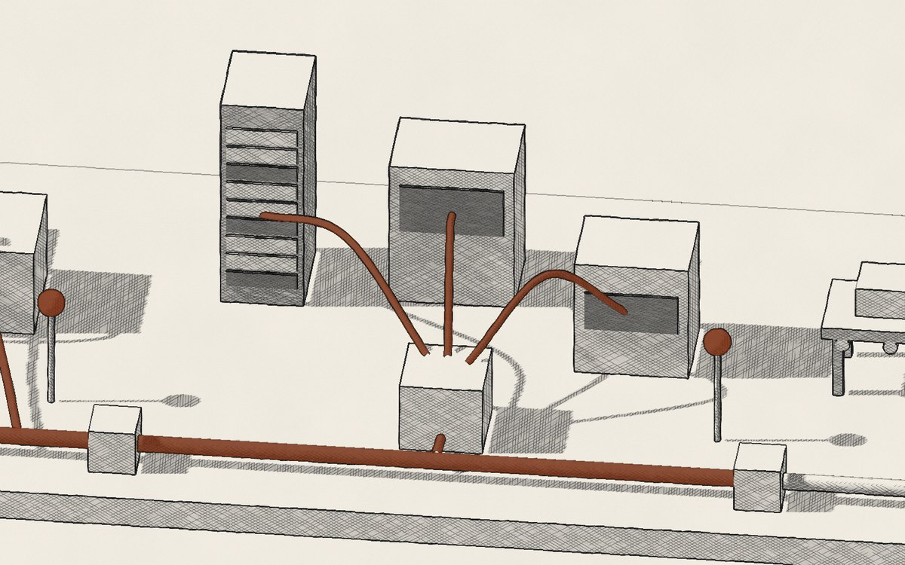

Storyboard and design system
Gate 1 is approved: As-Built, pencil-etched drawings, your homepage copy, and the capabilities chain reaction. This gate turns that into something buildable: the tokens and components the code will use, and every homepage section frame by frame, on desktop and phone, with what happens on scroll in both directions.
Approve
1 · The tokens and the rules for each colour.
2 · The components.
3 · The storyboard and scroll lengths.
4 · The open questions at the end.
Not in this gate
No production code. Gate 3 builds the homepage on a branch; Gate 4 is visual checks and readiness. Nothing is merged or published without you.
Files
docs/gate-2/tokens.json is the source; tokens.css is generated from it and this page runs on it.
1Tokens
Three layers. Primitives hold raw values, semantic tokens say what a value is for, and component tokens are what components read. Components never use a raw hex value.
Colour, and what each colour is allowed to mean
| Role | Value | Use | Contrast on parchment |
|---|
Button text on verdigris: {{ONACTION}}:1. Rules: coral only ever marks a problem; verdigris is our work and every action; sand is your approval; copper is the capability pulse. The light coral, sand and copper are never used for text; each has a darker shade that is.
Type
Self-hosted in the build (the repo already has a fonts folder); this page loads them from Google Fonts. Archivo's width axis is set to 88 for display, and headlines are capped at about 18 characters per line on desktop.
Space, grid and line
Lines: hairline 1px for frames and cells, 1.5px for field rules, 2px for emphasis. Pencil grey is for construction lines only. Corners: square everywhere; only stamps rotate. Breakpoints: 390, 768, 1024, 1440, 1920.
Motion tokens
Hover and press. Standard ease.
Tab swaps, menus, crossfades.
Reveals: columns, rows, notes.
Line work drawing on. Draw ease.
Hover or focus a card to play it. Scroll-scrubbed sequences have no duration: they follow the scrollbar, linear, so reverse scroll is exact.
2Components
Live, built from the component tokens. These are what Gate 3 implements first.
Nav
Cells: 48px tall, hairline dividers, mono 12 uppercase; hover tints verdigris. Action is always the last cell. Phone: wordmark, Menu, action; the menu opens a full-height sheet of the same cells. Sticky; it hides on scroll down and returns on scroll up, never during a pinned sequence.
Buttons and links
One primary action per screen. 48px target, mono 13 uppercase. Focus is a 2px verdigris ring offset 3px on every interactive element.
Sheet header
What's holding your business back?
Every section opens with a sheet number in mono, a headline in Archivo and, where there is one, a short copy column.
Problem column

Disconnected Systems
Your software works separately, leaving your people to move information between tools and departments.

Outdated Technology
Systems that once served you well now struggle to support how your business needs to operate.

Ready for AI. Unsure Where to Start.
You see the potential but need a clear path from experimenting with AI to using it effectively in everyday work.
Order: coral number, grey index, drawing, title, copy. Drawings are AVIF/WebP with fixed aspect ratio so nothing shifts as they load.
Capability stage

Build a stronger foundation.
Upgrade legacy technology and build software around how your people work.

Get your systems working together.
Connect your applications so information flows across your business.

Spend less time on manual work.
Reduce repetitive tasks and simplify handoffs between teams.
Off and on: off stages sit at 45% with a pencil lamp; when the pulse arrives the lamp turns copper, the label colours, and the copy writes in. The whole card links to its service page.
Revision table, stamps and ticker
| Rev | Change | Signed by |
|---|---|---|
| A | Discover | Both teams |
| B | Architect | You approve |
| C | Build | AI Alchemy |
| D | Validate | You approve |
The ticker is a static row that wraps; it scrolls sideways only if it overflows, pauses on hover and focus, and stops with reduced motion.
Brief fields
States: default, focus (verdigris rule and tint), error (coral-text rule and message linked by aria-describedby). Labels are always visible; placeholders are examples only. The form posts with no JavaScript.
3Homepage storyboard
Nine sections, top to bottom. Desktop frames are the approved sheets where we have them; the rest are wireframes in the same grid. Every scroll effect is listed in both directions.
4Motion and performance rules
Motion
- Native scrolling. No smooth-scroll library and no scroll hijacking; GSAP ScrollTrigger drives pins and scrubs.
- Two pinned sequences on desktop (chain reaction and redraft), plus a short pause before the problems. Each has a skip link before it.
- Every scrubbed effect is a pure function of scroll position, so reverse scroll is exact and refreshing mid-page lands in the right state.
- Content is in the HTML and readable with JavaScript off; motion only adds to it.
- Reduced motion: no pins, parallax, sweeps or loops; drawings and copy are shown finished.
- Nothing loops for ever; stage loops run once when lit.
Performance budgets (Gate 4 checks these)
- LCP under 2.5s on a mid-range phone over 4G; the hero headline is text, so it paints first.
- Hero drawing: AVIF about 180KB at 1440 wide, with a 390 crop for phones; responsive srcset for every drawing.
- JavaScript under 90KB gzipped on the homepage, loaded after first paint.
- Two font families, subset and self-hosted, with display swap.
- CLS under 0.05: every image has fixed dimensions.
- Lighthouse 90+ on performance, 100 on accessibility; axe clean.
Drawings ship as images rendered from the 3D models, which keeps the page light. The renderer stays in the repo, so new drawings come out in the same hand. Live WebGL is optional later, not part of this build.
5Pages and links
Existing URLs stay. The capability stages need a page each; three already exist under other names.
| Stage | Service | Links to | Status |
|---|---|---|---|
| 01 Modernize | Systems Modernization | /services/custom-software-modernization/ | Exists; retitle |
| 02 Connect | Systems Integration | /services/systems-integration/ | New page |
| 03 Automate | Workflow Automation | /services/workflow-automation/ | New page, or a section of the AI and automation page |
| 04 Understand | Data & Reporting | /services/cloud-data/ | Exists; retitle |
| 05 Enable AI | Generative AI Enablement | /services/enterprise-ai-automation/ | Exists; retitle |
| — | Technology Strategy & Architecture | /services/strategy-architecture/ | Exists; becomes “How we work” (the redraft) |
6Open questions for you
- Service pages. Are you happy with the mapping above: two new pages (Systems Integration, Workflow Automation) and three existing pages retitled? Gate 3 builds the homepage only; the pages follow.
- “How we work” copy. “Rev D. One operation.” and its supporting line were my draft in Gate 1. Keep them, or will you supply copy?
- General notes. I will draft four short notes from the current About page for you to approve. Only claims you confirm will appear.
- Industries. One drawing relabelled per industry (recommended for the homepage), or a separate drawing for each (more work, better for the industry pages)?
7Skills and tools used
| Used | For |
|---|---|
| design-system skill | Three-layer token structure; its generate-tokens.cjs script turned tokens.json into tokens.css. |
| Three.js r170 etching renderer (from Gate 1) | The drawings in the problem, stage and storyboard frames. |
| Python, Playwright with Chromium | Built this page, computed every contrast ratio from the token values, captured the approved Gate 1 sheets as storyboard frames, and checked the page at 1440 and 390 wide. |
| Repository files | Industry names, service URLs, contact email and the one-business-day reply come from the current site's pages. |
Not used yet: accessibility-auditor and web-performance-optimization (Gate 4), copywriting (only if you ask me to draft the open copy). No third-party skills were installed.